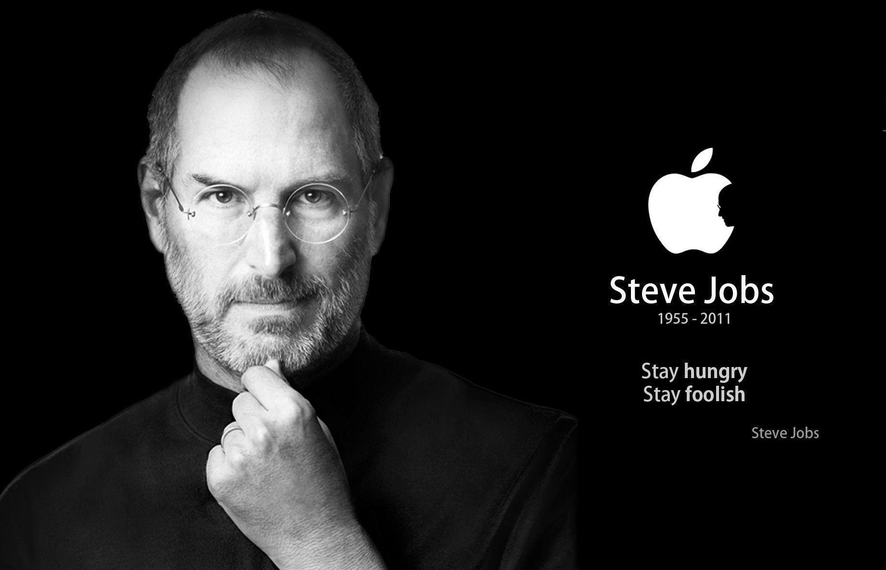

Steve Jobs

'Think Different' - Inventor, Designer, Entrepreneur
Life Of Steven Paul Jobs
- Birth: Feb 24, 1955
- Death: Oct 5, 2011
- Last Words: 'Oh wow.'
-
Early Life: Growing up, Steve Jobs had a hard time
with formal schooling (due to boredom) and often had to be bribed to
do his work. He was a college dropout. One of Jobs' first jobs was
with Atari as a video game designer.
-
1976: Steve Jobs co-founded Apple Computers with
Steve Wozniak.
-
1985: He left Apple and launched Pixar Animation
Studios.
- 1997: Returned as CEO to Apple again.
- Under his reign, Apple launched the iPod and iPhone.
-
If Jobs had not sold his Apple shares in 1985, when he left the
company he founded for over a decade, his net worth would have been
a staggering $36 billion.
"I like to believe there's an afterlife. I like to believe the
accumulated wisdom doesn't just disappear when you die, but somehow it
endures."
To Know more see this
wikipedia page.